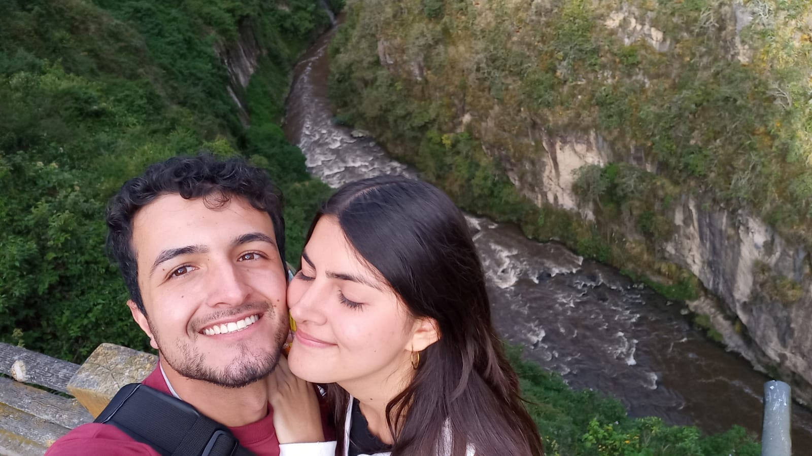

¡Hola, soy Boren Pardo!

¡Bienvenido! si entraste a mi pagina personal intuyo que me quieres conocer mejor, soy un chico colombiano de 25 años que está empezando en el mundo de la programación, mis intereses respecto al tema son unicamente los de crecer como persona en el mundo laboral y proporcionar el sustento que mi familia necesita.
Mis habilidades:
- Me gusta mucho tocar guitarra, empecé a los 9 años y desde entonces mi instrumento ha sido mi lugar seguro. No soy un experto pero disfruto mucho hacerlo, si algún dia te animas a aprender tu tambien, tengo unos trucos bajo la manga que te pueden interesar.
- Me gusta diseñar, tengo mucho que aprender del diseño digital, pero puedo hacerlo en menos tiempo de lo habitual, es algo que descubrí hace mucho tiempo y me encanta de mí.
- En el dibujo si soy experto, aunque tengo poco tiempo desarrollando esta habilidad, he logrado resultados muy buenos y tengo la intencion de perfeccionarlos aún más.
- Tambien tengo talento en el pensamiento tecnico-tecnologico: Circuitos, electronica, matematicas, fisica... todo este ambito a mi me gusta. Es la principal razón por la cual me encuentro en este camino ahora, y como todo lo demás, mi objetivo es profundizar en todo ello.
Mis redes sociales:
si te interesó lo que acabas de leer y quieres acompañarme en redes, puedes hacerlo en las siguientes:
- Si quieres seguirme en Facebook puedes hacerlo aquí.
- Si quieres seguirme en Instagram puedes hacerlo aquí.
- Si quieres una suscripción a crunchyroll gratis por 3 meses, puedes obtrenerla aquí.
eso es todo lo que te puedo contar por ahora. ¡Nos vemos luego!